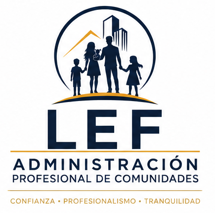

LEF Administración de Comunidades
Gestión administrativa, financiera y operacional orientada al orden, control, continuidad y trazabilidad de la comunidad.
Conocer Administración →Tres áreas especializadas bajo una misma visión: gestión profesional, prevención, transparencia y formación práctica.
 AdministraciónSecurityCapacitaciones
AdministraciónSecurityCapacitaciones
LEF CORPORATE integra administración de comunidades, seguridad privada y capacitación bajo un mismo enfoque de gestión: conocer la realidad, ordenar los procesos, prevenir riesgos, respaldar las actuaciones y mantener trazabilidad sobre las decisiones.

Gestión administrativa, financiera y operacional orientada al orden, control, continuidad y trazabilidad de la comunidad.
Conocer Administración →
Diagnóstico, auditoría, gestión de riesgos, protocolos, supervisión y proyectos para fortalecer sistemas de seguridad.
Conocer SECURITY →
Programas dirigidos a comités, administradores, personal y comunidades para fortalecer conocimientos, prevención y capacidad de respuesta.
Conocer Capacitaciones →Trabajamos con una metodología común para las distintas áreas de LEF CORPORATE. Cada servicio comienza comprendiendo la realidad y las necesidades existentes, para luego definir acciones, ejecutarlas con trazabilidad y verificar sus resultados.
Comprender el contexto, las necesidades, antecedentes y expectativas antes de definir cualquier intervención.
Identificar brechas, riesgos, prioridades y oportunidades de mejora mediante antecedentes y observación de la realidad.
Definir una respuesta adecuada, estableciendo alcance, acciones, responsables, recursos y resultados esperados.
Ejecutar las acciones definidas manteniendo organización, coordinación, respaldo y trazabilidad.
Revisar resultados, controlar avances, informar hallazgos y determinar los ajustes necesarios.
Incorporar aprendizajes, corregir desviaciones y fortalecer continuamente los procesos y controles implementados.
Cuéntenos qué está ocurriendo. LEF identifica la necesidad, determina qué área debe intervenir y evalúa si la respuesta requiere una solución específica o la integración de distintas capacidades.
Nuestro enfoque parte del problema y no del catálogo de servicios. Esto permite abordar situaciones administrativas, operacionales, de seguridad o capacitación desde una mirada coordinada y ajustada a la realidad de cada organización o comunidad.
Explorar solucionesLEF nace de una trayectoria desarrollada desde la operación cotidiana hasta la administración y gestión profesional, permitiendo comprender las necesidades de una comunidad tanto desde el terreno como desde la toma de decisiones.
Conocimiento directo del funcionamiento cotidiano de comunidades, personal, instalaciones, proveedores, controles y necesidades operacionales.
Administración basada en organización, documentación, seguimiento, respaldo de actuaciones y trazabilidad para apoyar la toma de decisiones.
Integración de criterios preventivos y de seguridad dentro de la gestión, fortaleciendo controles, procedimientos y capacidad de respuesta.
Conocer la operación desde dentro permite identificar necesidades reales, comprender cómo se ejecutan los procesos y diseñar soluciones que puedan aplicarse efectivamente en terreno.
Cuéntenos qué está ocurriendo. Podemos evaluar la necesidad y orientar una respuesta desde Administración, Seguridad, Capacitación o mediante una solución integrada.
Orden, gestión, finanzas, operación, documentación, seguimiento y control para comunidades.
Conocer Administración →Diagnóstico, riesgos, auditorías, protocolos, supervisión y proyectos de seguridad.
Conocer SECURITY →Formación para comités, administradores, personal y comunidades según sus necesidades.
Conocer Capacitaciones →Explíquenos la necesidad y evaluaremos qué área de LEF puede abordarla y cuál es el alcance de trabajo más adecuado.